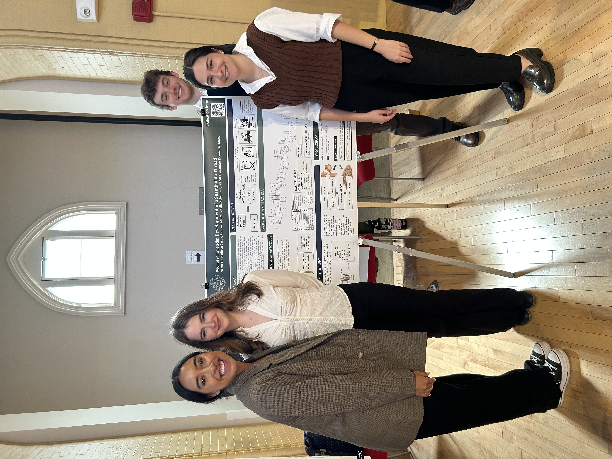

Things I love nerding out about.
Applying my degree work, technical fluency, and learning systems to areas that I am passionate about. Currently moving towards supporting sustainable materials decisions, from transport phenomena to material selection and test design.
Chemical engineering · materials science · systems · sustainability
Built for teams that need rigorous translation between technical concepts and accessible product strategy.
(photo pending)
Bio-based soft materials study
At FGE NexantECA I spearheaded two initiatives into sustainable materials — one focusing on novel textiles, the other on bio-based packaging. I performed a literature review of over 15 types of soft materials to understand the optimal applications of each and where the room for growth is.
-
Bio-based fibers
Chitin, mycelium, cellulose, hemp, bamboo
All of these are a novel approach, minus hemp and bamboo, which are more common. While bio-based, these often require solvents or coatings that make them non-biodegradable, which unfortunately defeats the purpose. Nor are these at commercial scale yet. However, I do think there's room for improvement in the solvent and coatings space to increase biodegradability.
-
Next-gen textiles
Lab-grown, protein-based & recycled fibers
Similar to their counterparts above — while these fibers have good intentions, they typically require solvents and coatings which reduce their biodegradability.
-
Sustainable packaging
Seaweed films, PLA, PHAs, paper composites, compostable coatings & packaging
Recently, there's been significant progress in bio-based packaging and plastics, with PLA being one of the most common bio-polymers. As benevolent as these compounds claim to be, they often get mistaken for their polymer counterpart in recycling systems, reducing their effectiveness.
-
Material circularity
Mechanical recycling, chemical recycling, textile sorting, closed-loop systems
Circularity is the golden idea of what everyone is trying to go towards. However, these systems often struggle with the feedstock — recycling facilities struggle with blended fibers, and "closed-loop" systems often require harsh chemicals. That said, I do believe there's significant progress being made in this industry, and I think every percentage closer to circularity is progress.

Final product — capstone poster session
Mycelium Thread Plant Model
Task at hand-
1
As part of my capstone project — my final undergrad assignment — the problem statement given was to create a novel substrate to improve the growth of mycelium.
-
2
Research led to the discovery that mycelium substrate growth was already highly efficient, but limited. We modified the problem statement to instead develop a novel textile that could be made with mycelium.
-
3
Having understood chitin was a large percentage of mycelium mass, the other being cellulose, the group decided chitin would be the working material.
-
4
A laboratory experiment to extract chitin from oyster mushrooms was successfully performed.
-
5
A literature review was performed to model a continuous operation facility that would extract chitin and extrude it through a proprietary solvent to create a final thread product.
-
6
While novel technology can be very exciting, it often requires a significant amount of time to become commercial or scalable. It was a lot of work to prove this process, and it wasn't commercially or environmentally viable in the end. Good ideas and production both take a lot of work and iteration on top of a good idea.